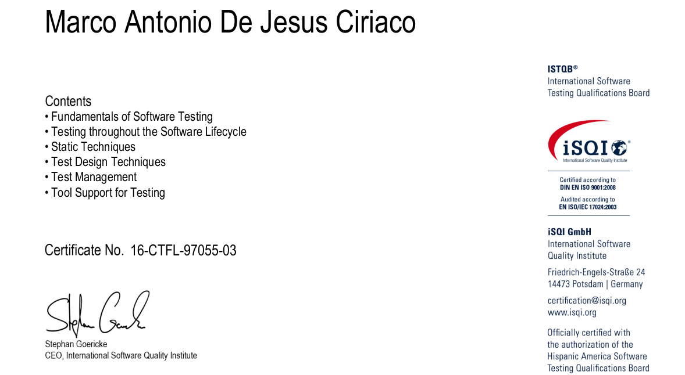
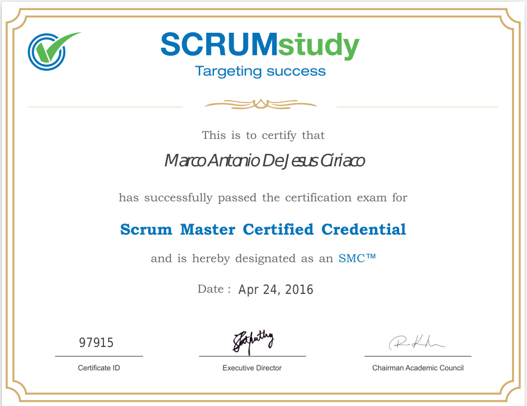

My Certifications

{kind=link}

{kind=link}

Java/Ruby Developer and Test Engineer
I'm a very passionate guy on Technology. During my Career I've played different roles such as Database Designer, Java Developer, Manual Software Tester, Automation Software Tester, Test Lead and Scrum Master. Needless to say that a very great LEARNER!
Want to get involved with Scrum? Be in touch at ScrumUnity~. I'm an Authorized Trainer Partner from ScrumStudy.
Test Automation Framework development with Cucumber for Executable Specifications in Ruby Programming Language based on Page Design Pattern with Selenium WebDriver.
Web API Test Scripting with postman and Newman. Usage of Mock Server and other Postman features to work in parallel with Development Team.
As Scrum Master I conduct Scrum ceremonies being entirely aware that my main activity is to remove impediments to the team.
As a Java developer, I worked with JSP format for web development along with JPA. Which covers, POJO's, OOP. Also I've worked with JUnit 4.
So you're Looking for some Training either for You or Your Team, Don't hesitate and get in touch. Let's personalize the learning.
Master Degree in Administrative Engineering and Quality
Diploma in Software Development (.NET Framework 3.5)
Projects have the benefits of getting Quality through the following activities I perform:
- Business Requirement Analysis, translated into Test Cases.
- Data Scenarios creation through SQL Queries.
- UI Automation Testing (Ruby / Selenium Webdriver).
- API Automation Testing (Postman Scripting).
- Test Execution through Selenium Grid and Newman through Docker images.
- Playing the Scrum Master role, which creates a better communication between Upper Management and the Team due to my Technical background.
Projects have the benefits of getting Quality through the following activities I performed:
- Business Requirement Analysis, translated into Test Cases.
- Data Scenarios creation through SQL Queries.
- UI Automation Testing (C# / Selenium Webdriver).
- API Automation Testing (SOAP UI).
- Test Execution through Selenium Grid.
Projects have the benefits of getting Quality through the following activities I performed:
- Business Requirement Analysis, translated into Test Cases.
- Mapping Requirements through a RTM.
- Defect Management Analsys to make sure SLA were complied.
- Test Reporting creation and analsys.
- Conducting Mitigation calls with different stakeholders.
- I played the role as Scrum Master, there was a transition from V-Model to Agile.
Projects have the benefits of getting Web Applications published to Production environment through the following activities I performed:
- Business Requirement Gathering.
- Business Requirement Gathering.
- Database relationship analysis and implementation.
- Classes Analysis and Design.
- Java Code Implementation.
- As there was no Front-End developer, I needed to work with AJAX requests through jQuery library and jQuery Themes.